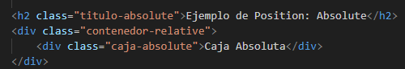
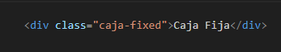

Esta propiedad se refiere a como se comporta un elemento con respecto a otros elementos, el flujo normal es colocar
uno seguido del otro segun su creacion en el HTML, sin embargo se pueden modificar sus propiedades
Es el valor por defecto, por lo que se posiciona en el flujo normal del documento
No se puede usar top , left, right o bottom
Al darle a un elemento la propiedad position relativa lo que hacemos es que podamos usar las propirdades
top left, right, y bottom, y se aplican valores positivos y negativos
En la posicion de absolute se posiciona en relacion con el elemento padre mas cercano, siempre y cuando ese
contenedor tenga una posicion relative, absolute o fixed
si no existe ninguno al HTML o al viewport (ventana del navegador)
Con position absolute se ajusta el tamaño de la caja al contenido interno
El elemento fixed, permanece ubicado en relacion con la ventana del navegador, asi que si los otros elementos
se mueven, el permanecera en relacion con la ventana del navegador, se usa para ventanas de navegacion, botones
de desplazamiento, o incomodos anuncios flotantes.
Este tipo de position se elimina del flujo normal del documento, no cupa espaco en el diseño
y otros elementos, no se ven afectados, se puede usar top, left, right y bottom
Los otros componentes son ajenos a su existencia, por lo que no se ajustan a esa existencia y caracteristicas
del nuevo componente con fixed
a continuacion el codigo HTML y CSS de un componente fixed, y un video de su comportamiento.
Vemos en el siguiente video, como la caja con fixed permanece en su sitio superior a la derecha
aunque demos scroll
El anterior video se capturo con screenpreso software gratuito
Click aqui para descargar SCREENPRESSOCombina a las caracteristicas de relative y fixed, se comporta como con position relative, es decir
se comporta como un elemento normal dentro del flujo del documento, hasta un punto donde se vuelve fijo(sticky)
El anterior video se capturo con screenpreso software gratuito
Click aqui para descargar SCREENPRESSO